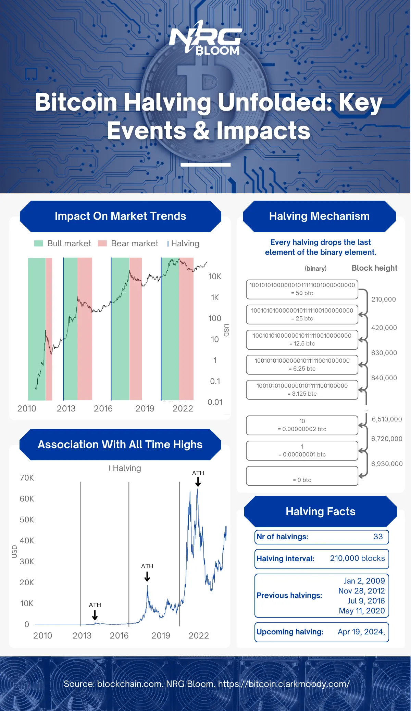

Understanding the Bitcoin Halving
Welcome to our comprehensive exploration of the Bitcoin Halving – a pivotal event in the world of cryptocurrency. Bitcoin, a trailblazer in the digital currency landscape, has introduced a unique approach to managing its supply: the halving. This blog post delves into what Bitcoin halving is, how it works, and its intricate workings within the Bitcoin network. We'll address critical questions such as "how many more bitcoin halvings are left", "how often does bitcoin halve", and "is bitcoin halving good or bad" while exploring its significant impact on the price of Bitcoin and the global community of Bitcoin miners. Understanding how bitcoin halving affects price and what happens after the last bitcoin halving is essential in grasping its full implications. We'll unravel the technicalities behind the halving process, examine its effects on the market and mining operations, and even venture a glimpse into the future of Bitcoin post-halving. Join us on this enlightening journey to understand one of the most critical aspects of Bitcoin's design and its implications for the future of this pioneering cryptocurrency.
What Is The Bitcoin Halving
What Are Mining Rewards?
The Bitcoin Network operates in such a way that roughly every ten minutes, miners discover a new block and add it to the blockchain. When a block is successfully mined, the miner receives a block reward, which includes the transaction fees from transactions within the block and a block subsidy. The block subsidy consists of newly created bitcoins, serving not only to reward miners but also to add new bitcoins into circulation.
However, unlike the traditional fiat financial system where the money supply can be adjusted arbitrarily, Bitcoin's approach to increasing its supply is finite and governed by preset rules in its code. When Bitcoin was created by Satoshi Nakamoto, the total supply was capped at 21 million bitcoins(1). These bitcoins are gradually introduced into the system through block subsidies. To ensure Bitcoin's scarcity, Satoshi implemented halving events, which make the cryptocurrency progressively rarer.
What Does The Bitcoin Halving Mean And How Often Does Bitcoin Halve?
The Bitcoin halving is an event where the block subsidy is halved, occurring every 210,000 blocks or about every four years. Initially, the block subsidy was 50 bitcoins(2). It then decreased to 25 bitcoins in 2012, halved again to 12.5 bitcoins in 2016, and currently sits at 6.25 bitcoins. The next halving is expected on April 19, 2024(3), reducing the block subsidy further to 3.125 bitcoins.
How Does The Bitcoin Halving Work?
The Bitcoin halvings are dictated in the Bitcoin code, by this specific code snippet:

So let’s dissect this code to unravel how the Bitcoin halving works(4).
Part 1

This line is responsible for creating the function and specifying the parameters.

The initial line of code within the function defines an integer variable named "halvings." Essentially, this variable holds a whole number, rounded down to its nearest integer value. Its value is determined through a calculation involving "nHeight," representing the number of blocks already mined, divided by a parameter established in the consensus rules.

For instance, consider the scenario when this post was composed, with a total of 806,005 blocks mined. The calculation would appear as follows: int halvings = 806005/210000, resulting in a value of 3.838119048. However, to conform to the requirement of being an integer, "halvings" is rounded down to 3.

This line was later added to fix a bug in the code.

These lines of code are responsible for determining the block subsidy. To break it down, let's start with the first line where nSubsidy gets defined by multiplying a constant value of 50 with a parameter named “COIN”. This parameter is defined in another part of the case as 100,000,000, signifying the quantity of satoshis in a single bitcoin, as indicated here:

This results in "nSubsidy" initially taking on the value of 50 * 100,000,000, totaling 5,000,000,000. This equates to 50 bitcoins, which aligns with the original block subsidy value mentioned earlier. In binary representation, this "nSubsidy" value can be expressed as 100101010000001011111001000000000.
The next line of code is where the current halving is taken into account to calculate the block subsidy. The “>>=” element, also called “bitwise right shift”, is a C++ element that drops a defined amount of elements at the end of the binary number.
To illustrate this better, let’s look at the code applied with the previous halvings. So initially, before the first halving nSubsidy was equal to 100101010000001011111001000000000 in binary terms, like explained above. The second line of code would have read as follows:
nSubsidy >>= 0
Which means that 0 elements at the end of the binary number are dropped and the block subsidy is equal to 100101010000001011111001000000000 in binary, a.k.a 5,000,000,000 satoshis or 50 bitcoins.
After the first halving, the second line would have read as follows:
nSubsidy >>= 1
This meant that 1 element was dropped, resulting nSubsidy being equal to 10010101000000101111100100000000, a.k.a 2,500,000,000 sats or 25 bitcoins.
At this moment we are approaching the end of the third halving. Which means the code reads as follow:
nSubsidy >>= 3
This renders the binary number to 100101010000001011111001000000, which is the binary form of 625,000,000 sats or 6.25 bitcoin, the actual block subsidy.

Given that the binary number representing 50 bitcoins contains only 33 elements, or bits, there's a finite capacity for halvings, 33 to be precise. Once these 33 halvings occur, the last bit will be dropped, signifying the cessation of the block subsidy. This event, marking the last bitcoin halving, is estimated to transpire around August 1, 2137(3). This finite nature of halvings contributes to Bitcoin's hard cap of 21 million coins and answers the critical question of when is the last bitcoin halving. It's this finite nature of halvings that contributes to Bitcoin's hard cap of 21 million coins.
What Impact Does The Bitcoin Halving Have?
So is the Bitcoin halving good or bad? Well it depends on your perspective, as this opinion will vary widely from investors, who enjoy the impact the Bitcoin halving has on the price action, to miners, who don’t like to see their block reward half.
How Bitcoin Halving Affects The Price
While it's important to note that correlation does not necessarily mean causation, there's a notable link between Bitcoin halvings, market surges, and record high prices. This pattern has been evident in past halving events, which were typically followed by significant market uptrends and peak prices. The reasons behind this correlation include:
Supply Shock
Reducing the block subsidy results in a supply shock. As the demand for Bitcoin remains steady or grows, the amount of new bitcoins available from miners decreases. This leads to reduced market liquidity and, consequently, price increases.
Increased Scarcity
Halving events accentuate Bitcoin's scarcity. Each halving brings Bitcoin closer to its maximum supply limit, emphasizing its scarcity-based value.
Anticipation and Speculation
Halvings are predictable events, leading to market anticipation. This often results in speculative trading, with investors buying Bitcoin before a halving in expectation of price rises. This speculative behavior can create a self-fulfilling cycle that pushes prices upward.
Media Attention and Investor Interest
Halvings garner considerable media coverage, drawing new investors' interest. The surge in attention and the influx of new participants in the market can further escalate Bitcoin's price.
How Bitcoin Halving Affects Bitcoin Miners
Bitcoin miners often approach halving events with a mix of anticipation and concern. While a potential rise in Bitcoin's value can increase the worth of their mined coins, the halving cuts their block subsidy rewards in half, significantly affecting their earnings. This situation compels many miners to either sell their older generation ASIC miners, which become less efficient and costly to operate, or to invest in expensive, high-efficiency new generation ASICs.
However, for some miners, like us at NRG Bloom, the halving presents an opportunity for this very reason. While numerous miners may find their older generation ASICs unsustainable, our Bitcoin mining operations, which utilize stranded power, benefit from exceptionally low operational costs. This efficiency makes it viable for us to acquire these second-hand mining rigs at competitive, affordable prices.

What Happens After The Last Bitcoin Halving
As previously mentioned, the Bitcoin protocol is designed for 33 halving events, and as of the time this post was written, 30 halvings are still to come. After these halvings are completed, the block subsidy will no longer include any new bitcoins, effectively ceasing its existence. Consequently, no new bitcoins will be added to the supply. From that point, miners' rewards will be solely based on transaction fees. Although this event is projected to occur in March 2137, predicting the future of Bitcoin mining is challenging. However, one certainty remains: mining will continue to be vital for the Bitcoin Network, serving as its backbone.
Let's explore some potential future scenarios. One possibility is that Bitcoin becomes so broadly adopted and used that transaction fees alone are sufficient to compensate for the absence of block subsidies. Another scenario could involve the Bitcoin price escalating so high that even minimal rewards in Bitcoin could represent significant value, keeping mining operations profitable. A third scenario might see many miners exiting the industry due to reduced profitability, leading to a decrease in mining difficulty and potentially making the business model more viable for the remaining miners. However, while this could happen, it's not a preferred outcome, as a reduced global hash rate might compromise the Bitcoin Network's security. It's likely that the future will involve a combination of these scenarios.
Conclusion
In conclusion, the Bitcoin Halving represents more than just a technical adjustment in the network. It's a pivotal event that encapsulates the innovative spirit of Bitcoin and its underlying philosophy of decentralization and finite supply. As we have explored, halvings impact the price of Bitcoin, shape the mining landscape, and contribute to the broader narrative of Bitcoin's role in the financial world. While the future post-halving remains a subject of speculation and anticipation, one thing is clear: Bitcoin continues to challenge traditional notions of currency and finance, paving the way for a dynamic and evolving digital economy. As we approach future halvings, it is essential to keep an eye on these developments, understanding that each halving marks another chapter in the ongoing story of Bitcoin and its impact on the world.